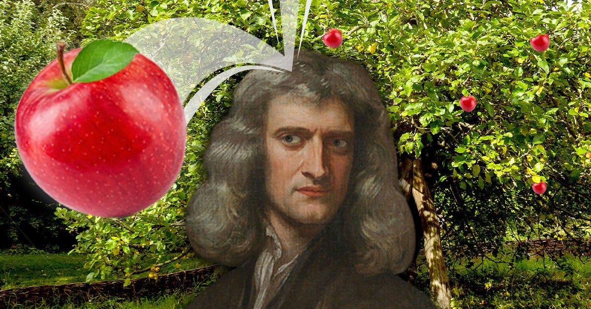

#metadata and libraries
%load_ext autoreload
%autoreload 2
import torch
import newton as N
import pandas as pd
import matplotlib.pyplot as plt
plt.rcParams['font.family'] = "Courier"
Abstract
We explore the mathematics that inform Newton’s Method for convex optimization and implement it in PyTorch. We perform a theoretical complexity analysis and emperically test the model in a variety of cases. Our finding suggest that Newton’s Method is much weaker when compared to instances of Gradient Descent, but may have specefic use cases in pre-optimized models. The code may be found at https://github.com/a1kyritsis/a1kyritsis_blog.github.io/tree/main/posts/NewtonMethod.
Newton’s Method for Gradient Descent
In regression-based machine learning, we hope to find weights \(\vec{w}\) on some feature set such that the loss is minimized. Given the ubiquity of this task and the ever-expanding size of datasets, achieving this in an effecient manner is a critical task. In a previous post, we explored one such convex optimization algorithm: Gradient Descent. In this blog post, we will implment and test another such algorithm; namely, Newton’s Method for Convex Optimization.
Newton’s Method is a generial procedure for finding the zeros of a function when no closed-form solution exists. We start by considering the two-dimensional case. Suppose we have some curve \(f(x)\) in \(\mathbb{R}^2\). One way to find its zeros is to pick some point \(x_k\) in the domain of \(f\), find \(f\)’s slope at \(x_k\) using \(f'\), move \(f'(x_k)\) in the domain to produce \(x_{k + 1}\), and then repeating the procedure. More formally,
\[x_{k + 1} = x_k - \frac{f(x_k)}{f'(x_k)}\]
until \(\epsilon\)-tolerance is reached. Recall from calc I that if \(f\) is a convex function, then its minimum is achieved when \(f'(x) = 0\). Hence, we may apply our zero-finding technique to minimization by finding the zeros of \(f'\). Notice that \(\frac{d}{dx} \left[f'(x) \right] = f''(x)\). Substituting into our original equation, we see that we may find the minimum of \(f\) using update
\[x_{k + 1} = x_k - \frac{f'(x_k)}{f''(x_k)}.\]
Letting \(\vec{x} = \{x_1, ..., x_p\}\) be some multivariant inputs to \(f\), we know that \(f\)’s gradient \(\nabla f(\vec{x})\) is equivlent to the single-variable derivative \(f'(x)\). But what about the second derivative, \(f''(x)\)? This is where the Hessian of \(f\), denoted as \(\mathcal{H}_f(\vec{x})\), comes into play. It is formally defined as
\[\mathcal{H}_f(\vec{x}) = \begin{pmatrix} \frac{\partial^2 f}{\partial x_1^2} & \frac{\partial^2 f}{\partial x_1 \partial x_2} & \cdots & \frac{\partial^2 f}{\partial x_1 \partial x_n} \\ \frac{\partial^2 f}{\partial x_2 \partial x_1} & \frac{\partial^2 f}{\partial x_2^2} & \cdots & \frac{\partial^2 f}{\partial x_2 \partial x_n} \\ \vdots & \vdots & \ddots & \vdots \\ \frac{\partial^2 f}{\partial x_n \partial x_1} & \frac{\partial^2 f}{\partial x_n \partial x_2} & \cdots & \frac{\partial^2 f}{\partial x_n^2} \\ \end{pmatrix}.\]
In simple terms, the entry at position \([i, j]\) of \(\mathcal{H}_f\) corresponds to the partial derivative of \(f\) evaluated at \(x_i\), then evaluated at \(x_j\). The logic of Newton’s Method may then be extended to the multivariant setting. We can use the gradient \(\nabla f(\vec{x})\) in place of \(f'(x)\) and the Hessian \(\mathcal{H}_f(\vec{x})\) in place of \(f''(x)\).
In this instance of Newton’s Method, we hope to minimize \(L(\vec{w})\), the logistic loss function. This has gradient
\[ \nabla L(\vec{w}) = \frac{1}{n} \sum_{i = 1}^n (\sigma(<\vec{w}, \vec{x_i}>) - y_i)x_i\]
and Hessian matrix defined entry-wise for as
\[\mathcal{H}_L[i, j](\vec{w}) = \sum_{i = 1}^n x_{ki} x_{kj} \sigma(s_k)(1 - \sigma(s_k)).\]
Here, \(\sigma(s_k)\) denotes the sigmoid function and \(s_k\) is the score of the \(k^{th}\) row of feature matrix \(X\). In practice, we compute \(\mathcal{H}_L(\vec{w})\) as the matrix product
\[X^T D X\]
where \(D\) the diagonal matrix with entries \(d_{kk} = \sigma(s_k)(1 - \sigma(s_k))\). For the \(m^{th}\) iteration, we perform update
\[ w_{m + 1} \longleftarrow w_m - \alpha \mathcal{H}_L (\vec{w})^{-1} \nabla L(\vec{w}) \]
where \(\alpha \in \mathbb{R}^+\) is some arbitrary learning rate parameter. Notice that we take the inverse of the Hessian. We state the mathematics for completeness and clarity. The important idea to remember here is that we are applying a zero-finding procedure to the gradient of \(L\) so that we may find its global minimum.
Implementation
The mechanics of Newton’s Method are identical to that of Gradient Descent with exception to the computation of the Hessian. We give a refresher of some of the key functions here, with special emphasis to the computation of the Hessian.
Scoring is implemented with the following function
def score(self, X):
if self.w is None:
self.w = torch.rand((X.size()[1])) #initialize random weight vector
return torch.matmul(X, self.w) #returns an n x 1 vector (column)We may calculate the gradient with
def grad(self, X, y, s):
#computes the gradient
n = X.shape[0]
return (1/n) * torch.sum((X * (self.sigmoid(s) - y).unsqueeze(1)), dim = 0) #calculate gradientNow for the new parts of code. For logistic loss, we may compute the Hessian according to the formula described above. The implementation is as follows:
def hessian(self, X, s):
#computes the Hessian of Logistic Loss Function
n = X.shape[0] #get the number of rows
D = torch.zeros(n, n) #initialize the diagonal matrix
S = self.sigmoid(s) * (1 - self.sigmoid(s)) #put the scores in the desired form
D.diagonal().copy_(S) #set the diagonal values
return X.t() @ D @ X # the hessian is foundThe pivotal step of the Hessian functions is to calculate the diagonal matrix \(X\). To do so, we find the diagonals values as a \(1 \times p\) torch vector and copy them into a \(p \times p\) matrix of \(0\)’s. The Hessian is nothing but the matrix product of \(X^T D X\), so we return it.
The final component of Newton’s Method is the per-iteration weight vector update. This is achieved with two lines of code:
def NewtonOptimizer(self, X, y, alpha):
#per iteration update of Newton Methods
s = self.score(X)
self.w = self.w - alpha * torch.inverse(self.hessian(X, s)) @ self.grad(X, y, s)Finally for clarity, as in Logistic Regression, we define a \(\texttt{train\_newton}\) function which updates the model till the gradient is \(\epsilon\)-tolerable (i.e. “close-enough” to the global minimum):
def train_newton(X, y, alpha, epsilon, NO):
#Trains Newton's Method
L = NO.loss(X, y)
loss = []
gradients = []
step = 0
while (torch.norm(NO.grad(X, y, NO.score(X))) > epsilon):
NO.NewtonOptimizer(X, y, alpha)
L = NO.loss(X, y)
print(L)
loss.append(L)
gradients.append(torch.norm(NO.grad(X, y, NO.score(X))))
step += 1
return [step, loss, gradients]The function returns the number of iterations to convergence, the per-iteration loss, and per-iteration gradient. We also implement a counterpart method \(\texttt{train\_logistic}\), which we leave to the imagination of the reader to decide what it does. The information these functions provide will be useful when we perform our emperical analysis of the algorithm’s performance.
Complexity Analysis
Although Newton’s Method can converge faster when the weight vector \(\vec{w}\) is close to the true solution, it is costly to compute. In addition to calculating the gradient, we must also compute the Hessian and its inverse. We make some simple assumptions to demonstrate the theoretical complexity of Newton’s Method relative to Gradient Descent.
Let \(c\) be a computational unit. Assume it costs \(c\) units to compute loss \(L\), \(2c\) units to compute the gradient \(\nabla L\), and \(pc\) units to compute the Hessian. Suppose also that it costs \(k_1 p^{\gamma}\) units to invert a \(p \times p\) matrix and \(k_2 p^2\) units to perform the matrix-vector multiplication by Newton’s Method. Finally, assume that Newton’s Method conveges to an \(\epsilon\)-tolerable loss in \(t_{nm}\) iterations, while Gradient Descent converges to the same solution in \(t_{gd}\).
First, we calculate per-iteration operation complexity for Newton’s Method. Since these operations are performed sequentially once per iteration, we sum them to see \[\begin{align*} \qquad &\text{Loss} + \text{Gradient} + \text{Hessian} + \text{Inversion} + \text{Matrix Multiplication} \\ &= c + 2c + pc + k_1 p^{\gamma} + k_2 p^2 \\ &= 3c + pc + k_1 p^{\gamma} + k_2 p^2 \end{align*}\] Since we converge in \(t_{nm}\) iterations, it follows that total operational-complexity is given by
\[O\left( t_{nm} \left[ 3c + pc + k_1 p^{\gamma} + k_2 p^2 \right] \right).\]
Gradient Descent only requires calculation of the gradient and the loss function. We may apply similar logic to produce total operational complexity of
\[O\left( t_{gd} \cdot 3c \right).\]
Since the cost of computation is fixed per iteration, for Newton’s Method to payoff, we need it to converge faster than Gradient Descent. To see by how much in terms of the computational complexity, we can set up and solve the following inequality: \[\begin{align*} t_{gd} \cdot 3c &\ge t_{nm} \left( 3c + pc + k_1 p^{\gamma} + k_2 p^2 \right) \\ t_{nm} &\le t_{gd} \left( \frac{3c}{3c + pc + k_1 p^{\gamma} + k_2 p^2} \right). \end{align*}\]
Notice that \(c\), \(k_1\), and \(k_2\) are constants determined by the processor. For matrix inversion, \(\gamma\) satisfies \(2 \le \gamma \le 3\). We take \(\gamma = 3\) to for the worst-case, Big-\(O\) bound. The variable here is then \(p\), the number of features. Observe that for \(p\) large, the \(k_1 p^{\gamma}\) term dominates. Hence, Newton’s method must converge at an inverse cubic rate to see any computational benefits.
We explore this idea in practice in the following section.
Experiments
We will first test if our implementation is working. Here we’ll run Newton’s Method on \(n = 100\) points with noise \(\gamma = .25\). In order to visualize the descision boundary in the plane, we’ll let the number of features \(p = 2\). For the input parameters, we’ll take learning rate \(\alpha = .3\) and convergence tolerence \(\epsilon = .01\).
n = 100
gamma = .25
p = 2
[X, y] = N.Utility.classification_data(n, gamma, p)
NO = N.NewtonMethod()
alpha = .3
epsilon = .01
[steps, loss, grad] = N.Utility.train_newton(X, y, alpha, epsilon, NO)
print("done.")
#plotting decision boundary
w = NO.w
plt.scatter(X[:,0], X[:, 1], c = y, cmap = "coolwarm")
N.Utility.draw_line(w, -2, 2.5, plt, color = "red", linestyle = "dashed", label = "Decision Boundary")
plt.legend()
plt.xlabel("Feature 0")
plt.ylabel("Feature 1")
plt.title("Test Points")
plt.show()
#Loss over iterations
#plotting loss over iterations
iterations = torch.arange(1, steps + 1)
plt.plot(iterations, loss, color = "red")
plt.xlabel("Iterations")
plt.ylabel("Loss")
plt.title("Model Loss Over Iterations")done.Text(0.5, 1.0, 'Model Loss Over Iterations')On the test points, we see that the algorithm is clearly able to distinguish between different groups. The loss over iterations is also monotonically decreasing. This both suggests that the algorith is up and runnin properly.
We’ll now compare Newtons Method to both Gradient Descent and Gradient Descent with Momentum. We’ll keep the learning rate parameter \(\alpha\) the same for all tests, and introduce a small momentum term \(\beta = .3\) for First, we will look at a situation where the weight vector \(\vec{w}\) starts far from the target weights \(\vec{w}^*\). We may simulate this with larger values of \(n\) and \(p\), since all models will have to perform more iterations to converge to \(\vec{w}^*\):
#Initialize Parameters
n = 100
gamma = .25
p = 25
alpha_N = .2
alpha_R = .2
beta = 0
epsilon = .01
[X, y] = N.Utility.classification_data(n, gamma, p)
NO = N.NewtonMethod()
LR = N.LogisticRegression()
LRM = N.LogisticRegression()
[N_steps, N_loss, grad] = N.Utility.train_newton(X, y, alpha_N, epsilon, NO) #train the Newton Method
[L_steps, L_loss] = N.Utility.train_logistic(X, y, alpha_R, beta, epsilon, LR) #train Logistic Regression
beta = .3 #Momentum Term
[LM_steps, LM_loss] = N.Utility.train_logistic(X, y, alpha_R, beta, epsilon, LRM) #Train Logistic Regression with Momentum
N_iters = torch.arange(1, N_steps + 1)
L_iters = torch.arange(1, L_steps + 1)
LM_iters = torch.arange(1, LM_steps + 1)
plt.plot(N_iters, N_loss, color = "red", label = "Newton's Method")
plt.plot(L_iters, L_loss, color = "blue", label = "Logistic Regression")
plt.plot(LM_iters, LM_loss, color = "green", label = "Logistic Regression with Momentum")
plt.xlabel("Iterations")
plt.ylabel("Loss")
plt.title("Model Loss Over Iterations")
plt.legend()Both instances of Gradient Descent outperformed Newton’s Method by north of 1000 iterations! Their loss curves are also steeper. Gradient Descient with Momentum converged the faster, and had the least amount of loss over the duration of its training cycle. Now we’ll look at the situation where \(\vec{w}\) starts relatively closer to \(\vec{w}^*\). We can simulate this with smaller values of \(n\), \(p\), and \(\gamma\), say \(50\), \(2\) and \(.125\) respectively.
#Initialize Parameters
n = 50
gamma = .25
p = 2
alpha_N = .2
alpha_R = .2
beta = 0
epsilon = .01
[X, y] = N.Utility.classification_data(n, gamma, p)
NO = N.NewtonMethod()
LR = N.LogisticRegression()
LRM = N.LogisticRegression()
[N_steps, N_loss, grad] = N.Utility.train_newton(X, y, alpha_N, epsilon, NO) #train the Newton Method
[L_steps, L_loss] = N.Utility.train_logistic(X, y, alpha_R, beta, epsilon, LR) #train Logistic Regression
beta = .3 #Momentum Term
[LM_steps, LM_loss] = N.Utility.train_logistic(X, y, alpha_R, beta, epsilon, LRM) #Train Logistic Regression with Momentum
N_iters = torch.arange(1, N_steps + 1)
L_iters = torch.arange(1, L_steps + 1)
LM_iters = torch.arange(1, LM_steps + 1)
plt.plot(N_iters, N_loss, color = "red", label = "Newton's Method")
plt.plot(L_iters, L_loss, color = "blue", label = "Logistic Regression")
plt.plot(LM_iters, LM_loss, color = "green", label = "Logistic Regression with Momentum")
plt.xlabel("Iterations")
plt.ylabel("Loss")
plt.title("Model Loss Over Iterations")
plt.legend()In this particular instance, Newton’s Method was able to converge faster than both Logistic Regression Models. On average, I found that Newton’s Method definitively converged faster than Vanilla Gradient Descent, and generially tended to tie with the Momentum model. Since we are generating random data and initial weight vectors this result is unsuprising. Even within testing groups, some point-vector combinations will be closer to their ideal solutions \(\vec{w}*\) which enables Newton’s Method to converge faster.
Finally, we’ll investigate Newton’s Method when the learning rate parameter \(\alpha\) is large. We will test this on a linear and non-linear data sets, and compare the loss over iterations. The data sets have the following shapes respectively:
#Input Parameters
n = 100
gamma = .5
p = 2
r1 = 4
r2 = 3
#Linear Data
[X_lin, y_lin] = N.Utility.classification_data(n, gamma, p)
#Non Linear Data
p1 = N.Circle.generate_points(r1, n, gamma)
p2 = N.Circle.generate_points(r2, n, gamma)
X = torch.cat((p1, p2), dim = 0)
col = 1.0 * torch.ones(2 * n, 1)
X = torch.cat((X, col), dim = 1)
y1 = 1.0 * torch.zeros(1, n)
y2 = 1.0 * torch.ones(1, n)
y_circ = torch.cat((y1, y2), dim = 1)[0, :]
X_circ = X.float()
#Plotting Data Linear Data
plt.scatter(X_lin[:,0], X_lin[:, 1], c = y_lin, cmap = "coolwarm")
plt.xlabel("Feature 0")
plt.ylabel("Feature 1")
plt.title("Linear Test Points")
plt.show()
#Plotting Non-Linear Data
fig = N.Circle.plot_points([p1, p2])
plt.show()
We’ll now instantiate the model and run the code
alpha = 130
epsilon = .1
NO = N.NewtonMethod()
print("linear train")
[N_steps_l, N_loss_l, grad_l] = N.Utility.train_newton(X_lin, y_lin, alpha, epsilon, NO) #train the Newton Method
NO.w = None
print("Non-Linear Train")
[N_steps_c, N_loss_c, grad_c] = N.Utility.train_newton(X_circ, y_circ, alpha, epsilon, NO)
#plotting loss over iterations
N_iters_l = torch.arange(1, N_steps_l + 1)
N_iters_c = torch.arange(1, N_steps_c + 1)
print(N_steps_l)
plt.plot(N_iters_l, N_loss_l, color = "red", label = "Linear Data")
plt.plot(N_iters_c, N_loss_c, color = "blue", label = "Non-Linear Data")
plt.xlabel("Iterations")
plt.ylabel("Loss")
plt.title("Model Loss Over Iterations")
plt.legend()
plt.show()
plt.plot(N_iters_l, grad_l, color = "red", label = "Linear Data")
plt.plot(N_iters_c, grad_c, color = "blue", label = "Non-Linear Data")
plt.xlabel("Iterations")
plt.ylabel("Gradient Norm")
plt.title("Model Gradient Over Iterations")
plt.legend()
plt.show()linear train
Loss 0.24302035570144653
Non-Linear Train
Loss 1.3598768711090088
Loss 1.6462184190750122
Loss 3.931082248687744
Loss nan
Loss nan_LinAlgError: linalg.inv: The diagonal element 1 is zero, the inversion could not be completed because the input matrix is singular.In doing so, we produce a numpy linear algebra error! This occurs because for \(\alpha\) large, the update to our weight vectors become extreme enough that the diagonal elements of the matrix are small. Python interprets these values as \(0\), and hence is no longer able to invert the matrix. Notice also that in our output the loss is increasing. These two facts suggest that our method is indeed diverging for \(\alpha\) large!
Conclusion
Today, we explored Newton’s Method applied to gradient descent. We investigated some of the mathematical theory that informs this method, learning how to transform a zero-finding problem to an optimization problem. We extended this notion to the multivariant setting with the concept of the Hessian and Gradeint. Next, we investigated the computational complexity of running Newton’s Method relative to Gradient Descent. We emperically compared the convergence rate of these two methods and analyzed Newton’s Method on non-linear training data.
Overall, our findings suggest that Newton’s Method is weaker than both instances of Gradient Descent. For any meaningful analysis (i.e. \(p \ge 2\)), Newton’s Method requires the calculation and inversion of the Hessian matrix \(\mathcal{H}_L\). This can be quite computationally intensive. Our theoretical analysis reveals that Newton’s Method must converge at an inverse cubic rate relative to Gradient Descent to see any performance benefits. However, in practice we observed that Newton’s Method is much slower when compared to Gradient Descent for generial analysis, and marginially quicker in specefic testing instances. Further, we also found that if \(\alpha\) is not chosen carefully, Newton’s Method can have trouble converging (and running) on some data sets.
Our findings suggest that Gradient Descent (particularly with momentum) is a better generial-purpose optimization algorithm, as it has robust performance across multiple use cases. In cases where we believe our initial weight vector is close to the target, Newton’s Method can offer some performance benefits. One possible instances of this is if we have reason to believe certain input features to our model are more important than others. Another instance could be if we are switching one feature out for another. Here, we already have a partially trained weight vector that is close to the target, and the model may only need a small number of steps to achieve convergence. Next up, Stochastic Gradient Descent!